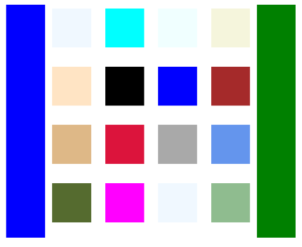

BlazorBindings.Maui - Preview 7
Following MAUI Global Availability release, BlazorBindings.Maui is updated as well, adding a bunch of features and improvements. Take a look at Get Started to check it out!
Shell navigation with object parameters
ShellNavigationManager is updated to support passing object parameters during navigation.
@page "/beardetails"
<ContentPage>
...
</ContentPage>
@code {
[Parameter] public Animal Bear { get;set; }
}
<Button Text="Go to Bear details" OnClick="GoToBearDetails" />
@code {
[Inject] ShellNavigationManager Navigation {get; set; }
Animal bearDetails;
...
async Task GoToBearDetails()
{
await Navigation.GoToAsync("/beardetails", new Dictionary<string, object>
{
["Bear"] = bearDetails;
});
}
}
Attached properties support
There is no built-in support for attached properties in Blazor so far, which makes it a bit hard with MAUI, where attached properties are used heavily. In previous versions they were supported using either parent (e.g. GridCell) or child (e.g. ShellProperties) elements, but in some cases such approach leads to very verbose markup. In this update support for attached properties is added via Blazor parameter with CaptureUnmatchedValues = true. Properties for the following types are supported - Grid, Shell, FlexLayout, AbsoluteLayout.
<ContentPage Title="Shell Properties"
Shell.NavBarIsVisible="true"
Shell.TabBarIsVisible="false"
Shell.TitleColor="@Colors.Green">
...
</ContentPage>
Note
This approach is not perfect. Such properties have no IntelliSense support or compile time validation, they are basically <string, object> pairs. Therefore, this approach might be revised in future.
Absolute Layout
With attached properties support, is became possible to add two layouts previously missing. First one is AbsoluteLayout, which is used to position and size children using explicit values.
<AbsoluteLayout HeightRequest="200">
<BoxView Color="Colors.Green"
CornerRadius="10"
AbsoluteLayout.LayoutBounds=@(new Rect(_greenX, _greenY, 20, 20))
AbsoluteLayout.LayoutFlags="@AbsoluteLayoutFlags.PositionProportional" />
<BoxView Color="Colors.Blue"
CornerRadius="8"
AbsoluteLayout.LayoutBounds=@(new Rect(_blueX, _blueY, 16, 16))
AbsoluteLayout.LayoutFlags="@AbsoluteLayoutFlags.PositionProportional" />
</AbsoluteLayout>
<Slider Minimum="0" Maximum="1" ValueChanged="SliderValueChanged" />
@code {
double _greenX;
double _greenY;
double _blueX;
double _blueY;
void SliderValueChanged(double value)
{
_blueX = value;
_greenX = value;
_greenY = (-Math.Cos(_blueX * 10) + 1) / 2;
_blueY = (-Math.Cos(_blueX * 20) + 1) / 2;
}
}

Flex Layout
FlexLayout is another layout control which is supported with BlazorBindings.Maui now.
<FlexLayout HeightRequest="300">
<FlexLayout Wrap="FlexWrap.Wrap" FlexLayout.Grow="1">
@foreach (var color in _colors)
{
<BoxView Color="color" HeightRequest="50" WidthRequest="50" Margin="5" />
}
</FlexLayout>
<BoxView FlexLayout.Basis="50"
FlexLayout.Order="-1"
Color="Colors.Blue" />
<BoxView FlexLayout.Basis="50"
Color="Colors.Green" />
</FlexLayout>
@code {
Color[] _colors = new[] {
Colors.AliceBlue,
Colors.Aqua,
Colors.Azure,
Colors.Beige,
Colors.Bisque,
Colors.Black,
Colors.Blue,
Colors.Brown,
Colors.BurlyWood,
Colors.Crimson,
Colors.DarkGray,
Colors.CornflowerBlue,
Colors.DarkOliveGreen,
Colors.Fuchsia,
Colors.AliceBlue,
Colors.DarkSeaGreen
};
}

What next?
In next release it is planned to add support to CarouselView and RefreshView controls. ComponentGenerator improvements are planned as well, to help to create bindings for third party MAUI controls. If you have any suggestions or ideas, you are welcome log issues!